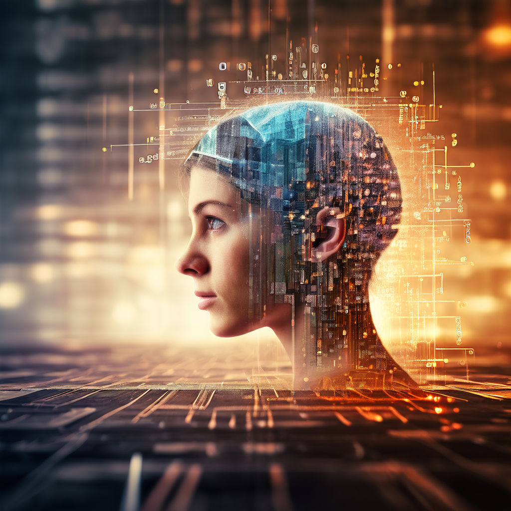

Author: Edison VARGAS
Date: June 22, 2024
In this digital age of rapid technological advancement, the landscape of programming is undergoing a profound transformation, opening up new frontiers and possibilities that were once thought to be the realm of science fiction. Join us as we delve into the exciting world of programming and examine the role of humans, machines, and potentially even animals in shaping its future.
Human programmers have long been the driving force behind software development, using their creativity, problem-solving skills, and domain expertise to craft innovative solutions to complex problems. While the rise of automation and artificial intelligence has raised questions about the future of human programmers, there is no denying the indispensable role they play in driving technological progress. As programming languages evolve, and new paradigms emerge, human programmers will continue to adapt and innovate, leveraging their unique abilities to push the boundaries of what is possible.
With the advent of artificial intelligence and machine learning, machines are increasingly capable of writing and optimizing code autonomously. From automated code generation tools to AI-driven programming assistants, machines are revolutionizing the way we approach software development, enabling faster, more efficient, and more scalable solutions. While the prospect of machines replacing human programmers entirely remains a topic of debate, there is no denying the transformative impact they are having on the programming landscape
While it may sound like the stuff of science fiction, recent advancements in the field of bio-inspired computing have raised the possibility of animals playing a role in programming. Researchers are exploring the use of neural networks inspired by the brain structures of animals, such as rats and bees, to tackle complex computational tasks. While still in its infancy, this emerging field holds the potential to revolutionize the way we think about programming and artificial intelligence.
In a recent statement, Jensen Huang, the CEO of Nvidia, shared his insights into the future of programming and the role of humans, machines, and potentially even animals in shaping it. According to Huang, the convergence of artificial intelligence, high-performance computing, and accelerated computing is driving a paradigm shift in programming, enabling developers to tackle increasingly complex challenges with unprecedented speed and efficiency. Nvidia's continued investment in GPU technology and software frameworks like CUDA and cuDNN is empowering developers to harness the full potential of AI and machine learning, blurring the lines between human and machine programmers.
As we look to the future of programming, one thing is clear: the boundaries between human, machine, and animal programmers are becoming increasingly blurred. Whether it's leveraging the creativity and expertise of human programmers, the efficiency and scalability of machine programmers, or the biological inspiration of animal programmers, the future promises to be one of innovation, collaboration, and discovery.
Join us as we continue to explore the frontiers of programming, AI and uncover the transformative potential that lies ahead. Together, let's shape the future of programming and redefine what is possible in the digital age.